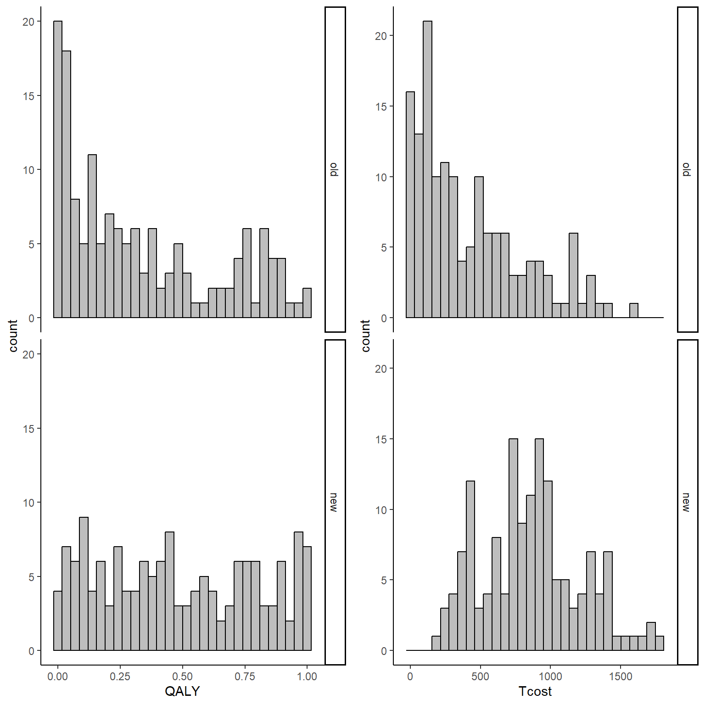
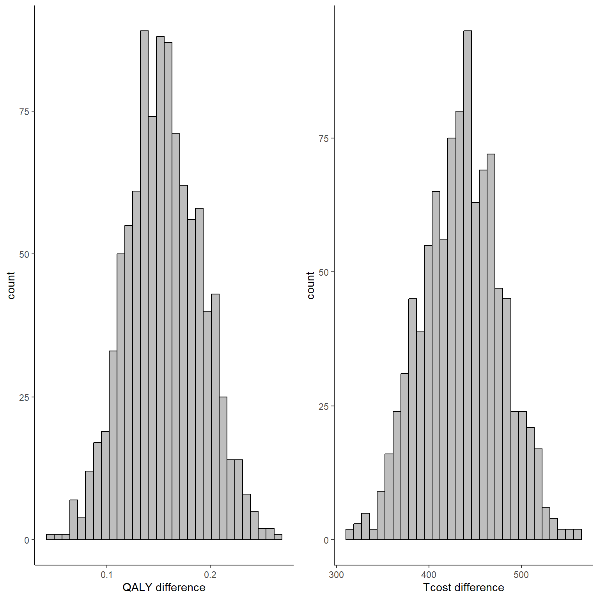
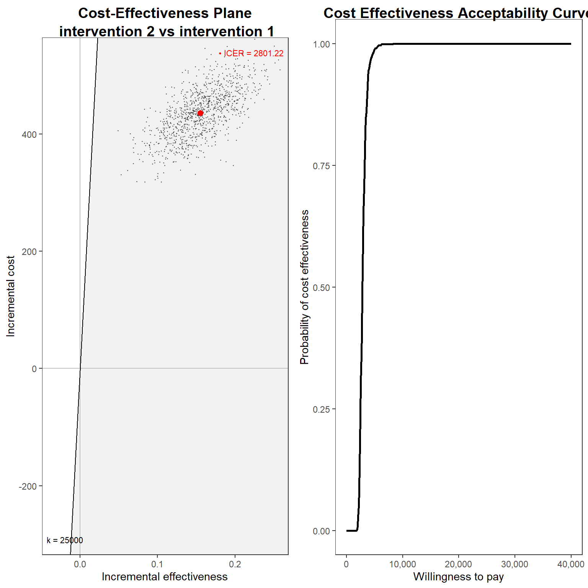

![]()
set.seed(768)
n <- 300
id <- seq(1:n)
trt <- sample(c(rep(0, n/2),rep(1, n/2)))
QALY <- Tcost <- rep(NA, n)
QALY[trt==0] <- rbeta(n/2, 0.5, 1)
QALY[trt==1] <- rbeta(n/2, 0.7, 0.9)
tcost_mean <- 200 + 300*trt + 700*QALY
tcost_sd <- 300
shape_c <- (tcost_mean)^2/(tcost_sd)^2
rate_c <- tcost_mean/(tcost_sd)^2
Tcost <- rgamma(n, shape_c, rate_c)
data_sim_ec <- data.frame(id, trt, QALY, Tcost)How to use bootstrapping in economic evaluations
Quarto
R
Academia
health economics
Hi everyone, I hope you are ok as this period has been quite busy for me. I had a lot going on, from the resuming of intense teaching activities, lots of boring staff meetings to attend and supervision to do. Luckily I was also able to submit my grant proposal for which I will not receive a response before the next 3-4 months. However, the important thing is that is now done and I just need to wait and see if this year I am lucky enough (wish me good luck!).
As for my updates, there is nothing important to report as this months I have been mostly focussed on getting back to the usual working rhythm and I do not have really much spare time to experiment something new myself. Hopefully, that will change in the future but I don’t want to be too optimistic as we know how this usually works out. Regardless, I thought it could be a nice opportunity to go through some basic applications in economic evaluations that I have noticed people who are not statisticians can have hard times with. Perhaps I will make these posts about conducting economic evaluations a thread if I feel like it as there is a lot to talk about. Today I thought to start with the basic of bootstrapping, a nonparametric technique that is often used in economic evaluations to derive standardised output of decision making such as the cost-effectiveness plane and acceptability curve. To be honest I am not a fan of bootstrapping as I find it quite unclear in terms of statistical properties and there is no general rule that suggests which specific approach works best across different scenarios (Bayesian methods are much better for this, trust me!). However, since it is a very popular and relatively easy to implement method in practice, I think it may be useful that I also cover it here. Next to come for possible future posts could be more advanced stuff such as mixed models and Bayesian approaches for trial-based cost-effectiveness analysis.
So, let’s start by considering a fake example where we generate some cost-effectiveness data from an hypothetical trial comparing two treatments (new \(t=0\) versus old \(t=1\)) on a total of \(n=300\) individuals. For the sake of simplicity, here I will assume that aggregated variables, such as QALYs and Total costs, have already been computed across the entire duration of the trial based on self-reported instruments (e.g. EQ5D-5L questionnaire) collected for each participant at different times. First, we generate our effect \(e_i\) and cost \(c_i\) data using some probability distributions to replicate their usual features (e.g. skewness) while also trying to respect their typical boundary values, e.g. between 0 and 1 for utility scores and positive values for costs.
With the above commands I have generated QALY and Total cost data for \(n=300\) individuals enrolled in the two treatments using Beta and Gamma distributions, respectively. I chose these distributions as they are quite popular for giving the data typical features encountered in practice, such as positive skewness for cost and QALYs. We can inspect the generated data using histograms:
library(ggplot2)
data_sim_ec$trtf <- factor(data_sim_ec$trt)
levels(data_sim_ec$trtf) <- c("old","new")
QALY_hist <- ggplot(data_sim_ec, aes(x=QALY))+
geom_histogram(color="black", fill="grey")+
facet_grid(trtf ~ .) + theme_classic()
Tcost_hist <- ggplot(data_sim_ec, aes(x=Tcost))+
geom_histogram(color="black", fill="grey")+
facet_grid(trtf ~ .) + theme_classic()
gridExtra::grid.arrange(QALY_hist, Tcost_hist, nrow = 1, ncol = 2)
From the graphs it is apparent that both outcomes do not nicely follow a normal distribution but present some degrees of skewness. This, typically, is not a problem when inference are about the means but given the limited amount of data and that the objective is more about representing uncertainty rather than statistical inference, it is a good idea to use methods that can take this feature of the data into account when reflecting the uncertainty about the cost-effectiveness of the new treatment compared to the old one. In addition, the code above also generates the bivariate data assuming some dependence relationship between the variables since cost data are generated as a function of effect data. This is done in order to reflect the typical feature that these types of data are usually associated. We can inspect summary statistics of the data by treatment group by typing:
library(dplyr)
library(knitr)
library(kableExtra)
data_sim_ec_stats <- data_sim_ec[,c("QALY","Tcost","trtf")]
d.summary <- data_sim_ec_stats %>%
group_by(trtf) %>%
summarize(sdQ = sd(QALY), sdTC = sd(Tcost),
medianQ = median(QALY), medianTC = median(Tcost),
meanQ = mean(QALY), meanTC = mean(Tcost),
rangeQ = range(QALY), rangeTC = range(Tcost),
corQTC = cor(QALY,Tcost))
kable(d.summary, caption = "Summary statistics", format = "html", digits = 1)| trtf | sdQ | sdTC | medianQ | medianTC | meanQ | meanTC | rangeQ | rangeTC | corQTC |
|---|---|---|---|---|---|---|---|---|---|
| old | 0.3 | 385.6 | 0.2 | 301.1 | 0.3 | 427.5 | 0 | 0.5 | 0.6 |
| old | 0.3 | 385.6 | 0.2 | 301.1 | 0.3 | 427.5 | 1 | 1602.7 | 0.6 |
| new | 0.3 | 354.3 | 0.4 | 855.8 | 0.5 | 864.3 | 0 | 161.9 | 0.7 |
| new | 0.3 | 354.3 | 0.4 | 855.8 | 0.5 | 864.3 | 1 | 1780.8 | 0.7 |
We can see that both groups have similar sd, ranges and positive correlations between QALY and Total cost data. However, the key location measures, such as the mean, show some noticeable differences with \(t=1\) being associated with both higher QALY and Total cost values. Let’s now try to run a quick linear regression model to check if there is any statistically significant effect in terms of mean differences between the two groups in the two outcomes. Keep in mind that this analysis is only for demonstrative purposes as in real economic evaluations you don’t really want to assess statistical significance since: both outcomes are usually secondary outcomes so there is usually not much power to detect anything;the objective of the analysis is to assess uncertainty about probability of cost-effectiveness between the groups not statistical inference. Having specified this, let’s run the model:
lm_Q <- lm(QALY ~ trtf, data = data_sim_ec)
lm_TC <- lm(Tcost ~ trtf, data = data_sim_ec)
summary(lm_Q)
Call:
lm(formula = QALY ~ trtf, data = data_sim_ec)
Residuals:
Min 1Q Median 3Q Max
-0.4811 -0.2759 -0.0612 0.2646 0.6712
Coefficients:
Estimate Std. Error t value Pr(>|t|)
(Intercept) 0.32600 0.02510 12.989 < 2e-16 ***
trtfnew 0.15605 0.03549 4.397 1.53e-05 ***
---
Signif. codes: 0 '***' 0.001 '**' 0.01 '*' 0.05 '.' 0.1 ' ' 1
Residual standard error: 0.3074 on 298 degrees of freedom
Multiple R-squared: 0.06091, Adjusted R-squared: 0.05776
F-statistic: 19.33 on 1 and 298 DF, p-value: 1.532e-05confint(lm_Q) 2.5 % 97.5 %
(Intercept) 0.27660392 0.3753880
trtfnew 0.08620041 0.2259021summary(lm_TC)
Call:
lm(formula = Tcost ~ trtf, data = data_sim_ec)
Residuals:
Min 1Q Median 3Q Max
-702.44 -300.62 -60.65 218.74 1175.16
Coefficients:
Estimate Std. Error t value Pr(>|t|)
(Intercept) 427.54 30.23 14.14 <2e-16 ***
trtfnew 436.80 42.76 10.22 <2e-16 ***
---
Signif. codes: 0 '***' 0.001 '**' 0.01 '*' 0.05 '.' 0.1 ' ' 1
Residual standard error: 370.3 on 298 degrees of freedom
Multiple R-squared: 0.2594, Adjusted R-squared: 0.2569
F-statistic: 104.4 on 1 and 298 DF, p-value: < 2.2e-16confint(lm_TC) 2.5 % 97.5 %
(Intercept) 368.0447 487.0387
trtfnew 352.6620 520.9449We can also retrieve the mean outcomes and related statistics for each group using the emmeans package’s command:
library(emmeans)
emmeans(lm_Q,~ trtf) trtf emmean SE df lower.CL upper.CL
old 0.326 0.0251 298 0.277 0.375
new 0.482 0.0251 298 0.433 0.531
Confidence level used: 0.95 emmeans(lm_TC,~ trtf) trtf emmean SE df lower.CL upper.CL
old 428 30.2 298 368 487
new 864 30.2 298 805 924
Confidence level used: 0.95 The output of both regressions suggests that for both outcomes there is a statistically significant effect in favour of a more effective and also expensive new treatment as compared with the old one. However, this does not answer our main question about cost-effectiveness probability. In addition, the model makes some strong assumptions such as the normality of both outcomes (clearly violated here) as well as the independence between them (also unrealistic here). So, how can we take these features into account while also deriving an answer to our main question for decision makers? Well different approaches can be used. Here we focus on the use of nonparametric bootstrapping.
The main idea behind the method is based on the following steps:
1 First, perform a sample with replacement of your QALY and Total cost data in each treatment group so to generate a new sample, called bootstrap sample, of the same size as the original but with each element that is randomly drawn using the pool of the original data.
2 Compute summary statistics of interest (e.g. means and sds) or fit the desired model of analysis (e.g. linear regression) to the bootstrap sample instead of the original dataset and derive and store the desired estimates.
3 Repeat step 1 and 2 for a large number of times \(B\) (e.g. typically in the order of thousands) so that at the end a total of \(B\) bootstrap estimates are derived and stored and use this set of estimates to assess uncertainty about the probability of cost-effectiveness of the treatments.
Let’s see how this works in practice. In R, we can for example use the boot package which allows to flexibly define our bootstrapping procedure and to include within the procedure our linear regression model using the following commands:
library(boot)
boot_lm <- function(data, i){
data2 <- data[i,]
lm.boot.Q <- lm(QALY ~ trtf, data = data2)
lm.boot.TC <- lm(Tcost ~ trtf, data = data2)
em.lm.boot.Q <- emmeans(lm.boot.Q,~trtf)
em.lm.boot.TC <- emmeans(lm.boot.TC,~trtf)
trt_diffQ <- coef(lm.boot.Q)[2]
trt_diffTC <- coef(lm.boot.TC)[2]
mean_Q <- summary(em.lm.boot.Q)[,2]
mean_TC <- summary(em.lm.boot.TC)[,2]
return(c(trt_diffQ,trt_diffTC,mean_Q,mean_TC))
}
set.seed(4567)
boot_est_lm <- boot(data_sim_ec, boot_lm, R=1000)
delta_e_boot<-boot_est_lm$t[,1]
mu_e_boot<-cbind(boot_est_lm$t[,3],boot_est_lm$t[,4])
delta_tc_boot<-boot_est_lm$t[,2]
mu_tc_boot<-cbind(boot_est_lm$t[,5],boot_est_lm$t[,6])In the code above what I do is to first write a function which contains all the steps that I want to be repeated within each bootstrap step, i.e. the models that must be fitted to each of the \(B=1000\) bootstrap samples that I generate, as well as the specific quantities that I want to store from each of these models, i.e. the estimates for the mean difference in QALY and Total cost between the groups as well as the mean estimates for both outcomes for each group. In the second part of the code I use the boot function to generate the bootstrap samples using sampling with replacement and I set the number of replications that I want to use in the argument R. Finally, after the command has finished running, I create objects containing the set of bootstrapped values for each of the stored quantities by extracting these from the output of the boot function. For example, we can inspect the mean difference set of estimates for QALYs and Total costs by typing:
data_est_delta <- data.frame(delta_e_boot,delta_tc_boot)
QALY_delta_hist <- ggplot(data_est_delta, aes(x=delta_e_boot))+ xlab("QALY difference")+
geom_histogram(color="black", fill="grey")+ theme_classic()
Tcost_delta_hist <- ggplot(data_est_delta, aes(x=delta_tc_boot))+ xlab("Tcost difference")+
geom_histogram(color="black", fill="grey") + theme_classic()
gridExtra::grid.arrange(QALY_delta_hist, Tcost_delta_hist, nrow = 1, ncol = 2)
To note that, since bootstrapping is a nonparametric method, no explicit assumptions are made about the distributions of QALY and cost data, although the performance of the method highly depends on the number of subjects available as it still relies on asymptotic theory. In addition, since we bootstrapped both outcomes at the same time, correlation between the variables is also taken into account, although only indirectly (i.e. it was not explicitly captured in the fitted models but the joint sampling of individuals might be enough to preserve the correlation in the bootstrapped samples).
Using these set of values or distributions for the mean difference and mean outcome in each group we can now compute standard CEA output. To that hand, we use the function contained in the BCEA package which allows us to retrieve such graphical output in a relatively easy way. We can, for example, extract the value of the ICER based on the bootstrapped estimates:
library(BCEA)
cea_res<-bcea(e=mu_e_boot,c=mu_tc_boot, ref=2, Kmax = 40000)
cea_res$ICERintervention 1
2801.223 And, finally, we can plot the usual graphs that allow to assess the probability of cost-effectiveness, such as the cost-effectiveness plane and acceptability curve.
g1_cea <- ceplane.plot(cea_res, graph = "ggplot2")
g2_cea <- ceac.plot(cea_res, graph = "ggplot2")
gridExtra::grid.arrange(g1_cea, g2_cea, nrow = 1, ncol = 2)
Hopefully this post was helpful to someone. Although it was just a silly example I think it is important to know how these methods work starting from simple scenarios. In future posts I will also go over more advanced stuff, such as dealing with longitudinal data, taking into account possible confounders, clustering, proper modelling techniques such as seemingly unrelated regression and, of course, how to do everything you need with a single and beautiful Bayesian analysis!!!!